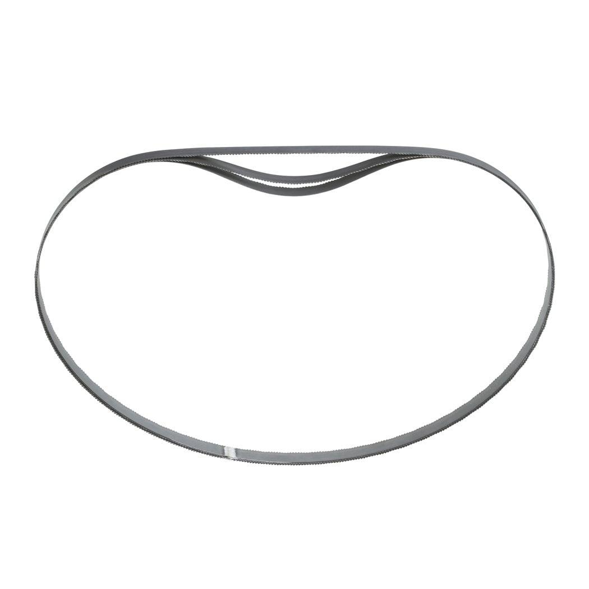
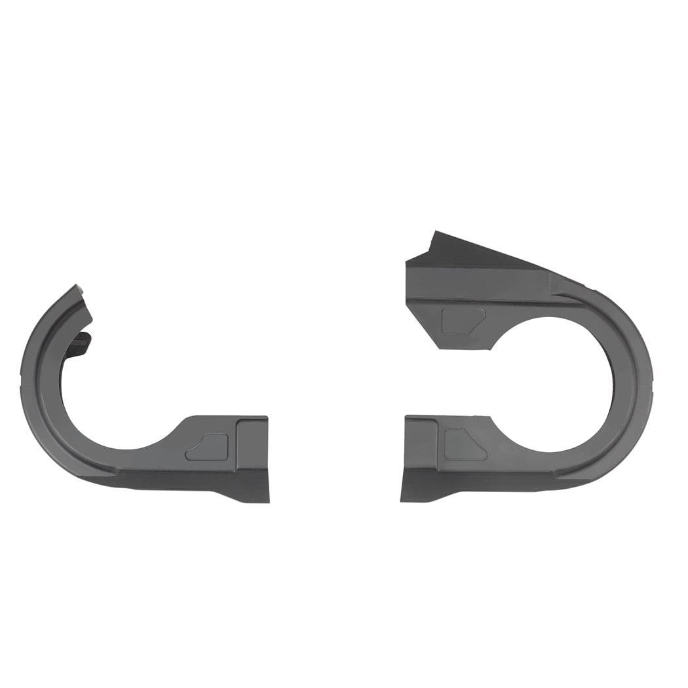
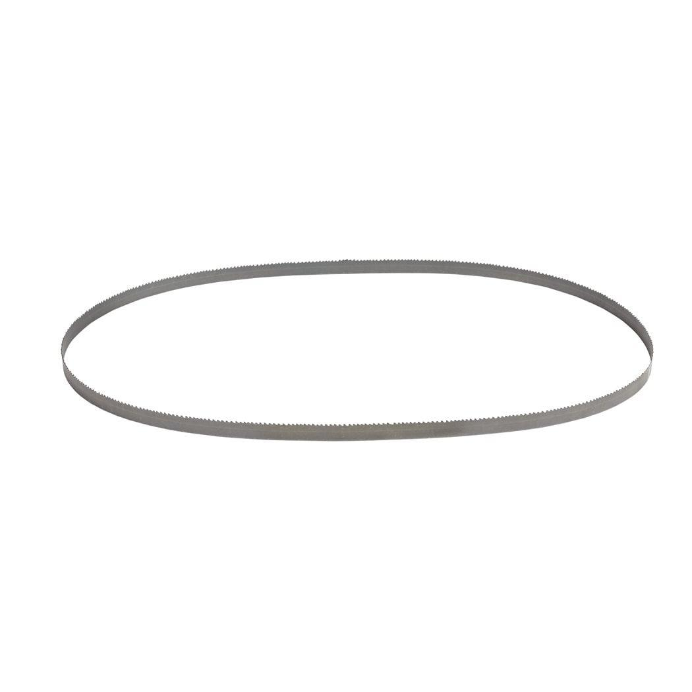

| Contents | 14 TPI, 1.8 mm tooth pitch, ideal for materials 5-8 mm in thickness. |
| Material wall thickness (mm) | 5 - 8 |
| Materials suited for | Angle Iron|Galvanised Pipe|Stainless steel|Cast Iron |
| Max. capacity (mm) | 5 - 8 |
| Pack quantity | 3 |
| Total length (mm) | 1140 |
| Article Number | 48390511 |
| EAN | 045242132164 |